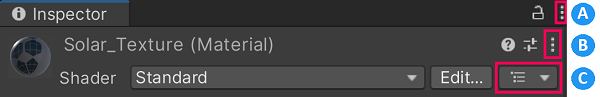

You can view and edit a Material asset in the InspectorA Unity window that displays information about the currently selected GameObject, asset or project settings, allowing you to inspect and edit the values. More info
See in Glossary window.
The Material Inspector makes it possible to do the following things:
See Materials introduction to learn more about Materials.
 Material controls in the Inspector
A: Inspector Controls
B: Material Controls
C: Material Hierarchy
Click Material Controls to open the selected Material’s Settings menu.
| Setting | Function |
|---|---|
| Select Shader | Move focus to this shader asset in the Project windowA window that shows the contents of your Assets folder (Project tab) More infoSee in Glossary. This can aid navigation in a Project with many Assets. |
| Edit Shader | Open the source file for the shader asset that this Material uses. |
| Select Material | Move focus to this Material asset in the Project window. This can aid navigation in a Project with many Assets. |
| Flatten Material Variant | Convert this Material Variant to a Material and retain its Property values. Only available when the selected Material is a Variant. |
| Copy Material Properties | Copy Material Property values so that you can copy them to other Materials. |
| Paste Material Properties | Paste Material Property values into this Material from the computer’s clipboard. Only available when there are Property Values in the clipboard. |
| Create Material Preset | Create a duplicate of this Material’s Property settings. See Presets for more information. By default, Unity creates the duplicate in the same asset directory as this Material. |
| Copy Atlas | Copy the font atlas to the keyboard. Only for Text Mesh Pro Materials. |
| Paste Atlas | Paste a Text MeshThe main graphics primitive of Unity. Meshes make up a large part of your 3D worlds. Unity supports triangulated or Quadrangulated polygon meshes. Nurbs, Nurms, Subdiv surfaces must be converted to polygons. More info See in Glossary Pro font atlas into this Material. |
| Reset | Reset all Material properties to the default values specified by the shader associated with this Material. |
The properties the Unity Editor displays for a Material depend on the Material Properties defined by the shader that this Material uses. However, all Materials share three Advanced Options.
| Advanced Options | Function |
|---|---|
| Render Queue | Select a Render Queue. The Material’s shader determines the default Render Queue value. Corresponds to the Material.renderQueue property. |
| Enable GPU Instancing | Optimize draw calls for meshes that use this Material. See GPU Instancing for more information. |
| Double Sided Global Illumination | Instruct the Progressive Lightmappers to consider backfaces in global illuminationA group of techniques that model both direct and indirect lighting to provide realistic lighting results. See in Glossary calculations. When this option is active, back-facing polygons bounce light using the same emission and albedo values as front-facing polygons. Note: The appearance of back-facing polygons does not change when you enable this option because this option does not cause Unity to render back-facing polygons or add them to lightmaps. Corresponds to the Material.doubleSidedGI property. |
Material